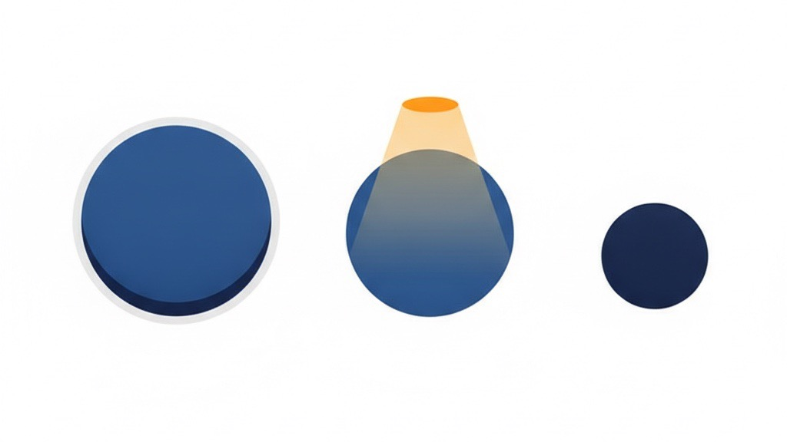

「1人には大きすぎ、大手には小さすぎる」
個人・中小が勝てる“隙間市場”の選び方
業務改善コラム ／ Amazonコラム ／ 読了目安：約10分
新しい商品を出すとき、いちばん大事なのは「何を作るか」ではなく「どの市場で戦うか」だと考えています。 どれだけ良い商品でも、選んだ市場を間違えると、大手の物量か、終わりのない値下げ競争に巻き込まれて消耗します。 この記事では、私たちが新規参入を判断するときに実際に使っている「1人には大きすぎ、大手には小さすぎる隙間市場」の見つけ方を、4つの物差しで公開します。
前提：これは「需要を起点に選ぶ」考え方です
この記事は「市場（需要）を起点に、勝てる場所を選ぶ」進め方（いわゆるマーケットイン型）です。 一方で、「自社にしか作れない技術」「どうしても世に出したい商品」が先にある場合（いわゆるプロダクトアウト型）では、順番が逆になります。 その場合は“空いている隙間を探す”のではなく、作りたいものを起点に、それを必要とする市場をどう見つけ・育てるかが主題になり、見るべき指標も変わります（いま需要が小さくても、価値を伝えて需要そのものを作りにいく）。 下で紹介する物差しは、あくまで前者＝需要を起点に新規参入するときの道具として読んでください。
1. なぜ「良さそうな市場」で消耗するのか
商品を探すとき、つい「売れていそうな市場」に目が向きます。検索すればたくさん売れている、レビューも多い——。 ですが、そういう市場はすでに資金力のある企業が広告とレビューで陣地を固めていることがほとんどです。 後から個人や中小が同じ土俵に上がると、広告費の殴り合いになり、利益が出る前に体力が尽きます。
逆に「誰も売っていない市場」も危険です。売れていないのには、たいてい理由があります。 需要そのものが小さい、あるいは「無名の商品では買ってもらえない」種類の商品だった、というケースです。 大きすぎる市場は大手に潰され、狭すぎる市場はそもそも売れない。だからこそ、その間を狙います。
2. 狙うのは「中くらいの隙間」
私たちが探すのは、ひとことで言えば「1人でやるには少し大きく、資金を持った企業にとっては小さすぎる」市場です。 大企業が本気で取りに来るには市場が小さすぎて採算が合わず、かといって個人が片手間でやるには少しだけ手間とお金がかかる。 その「ちょうど中くらいの隙間」は、不思議と手薄なまま残っていることが多いのです。
大手には小さすぎて、個人には少し大きい。
その隙間に、勝てる場所がある。

3. 4つの物差し
「隙間かどうか」は、感覚ではなく数字で見ます。私たちが新商品を検討するときに当てている、4つの物差しを紹介します。
① 月間検索数 ＝ 3万〜5万件
需要があることの目安です。これより小さいと売上の天井が低く、これより大きいと大手の主戦場になりがち。「ほどよく需要があって、まだ取り合いになっていない」帯を狙います。
② 販売単価 ＝ 2,000円前後
安すぎると、広告費と手数料を引いたあとに利益が残りません。高すぎると購入のハードルが上がり、レビューも貯まりにくい。1点あたりで利益を確保しやすい価格帯から入ります。
③ 原価率 ＝ 30%以下
広告・手数料・送料・返品まで含めても利益が残る、という防御ラインです。ここを最初に確認しておくと、後から「売れているのに利益が残らない」状態を避けられます。
④ 競合の商品画像や説明文が弱い
商品画像や説明が雑に作られている市場は、デザインと見せ方で十分に勝てます。ここがいちばん「個人・中小の伸びしろ」が出るポイントです（次の章で詳しく）。
数字はあくまで目安で、商品の分野によって調整します。大事なのは「①〜④を埋めてから動く」という順番です。市場調査を読み間違えたまま在庫を発注すると、後戻りができません。
4. もう一つの物差し：自動化で“安く回して勝つ”余地があるか
市場と競合を見るだけでは、まだ半分です。私たちはそこに「この市場の作業を、自社の自動化・仕組み化でどれだけ安く回せるか」という視点を重ねます。 同じ市場・同じ商品でも、運用にかかる費用の構造で差をつけられるなら、それは立派な"勝てる理由"になるからです。
具体的な例で考えてみます。
たとえば、こんな市場
- 競合は 2,000円 で販売、1個あたりの利益は 400円
- 販売数は 月1,000個 → 限界利益（売上から原価などの変動費だけを引いた儲け）は 月40万円
- ただし競合は、この運用（出品管理・受発注・問い合わせ対応など）に 人件費を月20万円 かけている
ここで、同じ作業を自社がほぼ自動・仕組みで回せるとどうなるか。競合が人手に払っている20万円分が、まるごと利益として残ります。 この+20万円は、いわば自由に使える"弾"です。
競合が人手に使う20万円を、自動化で“弾”に変える
→ 値引き・広告・次の施策に回せる
この余力の使い道は2つの勝ち筋に分かれます。
- ① 商品側で価値を上げる（ブランドづくり）：浮いた分を商品力やブランドづくりに投じ、簡単にはマネされない参入障壁を作る。
- ② 工程側で価格を下げる（業務のやり方の改善）：浮いた分を価格に転嫁し、競合が人件費の構造上ついてこられない水準まで持っていく。自社の業務のやり方を磨くほど、この幅は広がります。
だから私たちは、「市場の隙間」だけでなく、「自動化・仕組み化で運用にかかる費用に差をつけられそうな商品・市場」を探しています。 市場選び ×（自社の）業務効率の優位。この掛け算ができる場所が、いちばん長く勝てる場所です。
※ 上の金額は考え方を示すための例です。実際は商品ごとに数字が変わるので、「この市場の人手は、どこを仕組みに置き換えられるか」を一件ずつ見て判断します。
5. 競合の「弱さ」をどう見抜くか
4つの物差しの中で、いちばん差がつくのが④の「競合の弱さ」です。具体的には、こんな点を見ます。
- 1枚目の画像が弱い：何の商品か、誰のための商品かが一瞬で伝わらない。スマホで小さく見たときに負けている。
- 使う場面が描かれていない：仕様の数字だけが並び、「自分が使う場面」が想像できない。
- レビューの不満が放置されている：「ここが惜しい」という声に、商品もページも答えていない。
- サイズ感・比較が分からない：大きさや他商品との違いが伝わらず、買う前の不安が残る。
こうした「惜しい市場」は、商品力そのものより見せ方の改善だけで取れる余地が大きく残っています。 だから私たちは、勝負を決める画像・レビュー・商品の見せ方には手とお金を惜しまず投資します（この「どこに集中して投資するか」という考え方は、 「センターピンには、お金を惜しまない」で詳しく書いています）。
6. 参入と同時に「撤退ライン」も引く
隙間市場が見つかっても、いきなり大量に仕入れることはしません。少量で試し、最速で結果を確かめるのが基本です。 そしてもう一つ大切なのが、参入する前に「どうなったらやめるか」を先に決めておくことです。
撤退ラインを決めずに始めると、売れない理由を探しながらズルズルと在庫と広告費を増やしてしまいます。 「いつまでに・どの数字に届かなければ引く」を最初に言葉にしておくだけで、判断が感情から切り離され、次の市場へ素早く動けます。 始め方と同じくらい、やめ方を設計しておくことが、長く続けるコツです。
7. 市場規模の見極めは、物販だけの話じゃない
ここまではAmazon・物販を例にしてきましたが、「その市場に、戦うだけの需要が本当にあるのか」を先に確かめる——これはどんな事業にも共通します。 店舗でも、サービス業でも、新しいメニューや新規出店でも、考え方は同じです。
たとえば、あるサロンの立て直しを考えたとき、私たちが最初にやったのは店内の改善ではなく、「そもそも、この市場はまだ存在しているのか」の確認でした。 市場そのものが消えているなら、いくら店内を磨いても戻りません。逆に需要が残っているなら、落ちた分は取り直せる。 ここで打ち手が180度変わるので、感覚で飛ばしてはいけない分岐点です。 （詳しくは 売上がピークの「10分の1」まで落ちたサロンを、どう読み解いたか に書いています。）
よくある失敗は、商圏の人口や競合の数“だけ”を見て「ライバルが少ない＝勝てる」と早合点すること。 “そもそも需要が小さいから空いていた”だけだと、後から後戻りできません。規模を見極めるこの一手間が、いちばん高くつく失敗を防ぎます。
8. まとめ：勝てる場所を、先に選ぶ
商品の良し悪しよりも先に、「どの市場で戦うか」で勝負の大半は決まります。 大手には小さすぎ、個人には少し大きい——その隙間を、検索数・単価・原価率・競合の弱さという4つの物差しで探す。 さらに「自動化・仕組み化で安く回して勝てる余地があるか」を重ね、市場選び × 業務効率の優位の掛け算で選ぶ。 小さく試して、撤退ラインも先に引いておく。
特別な裏技ではなく、「動く前に、数字で勝てる場所を選んでおく」という地味な順番です。 ですが、この順番を守れるかどうかで、その後の消耗はまったく変わってきます。
「どの市場で戦うか」を、一緒に見極めませんか
出したい商品はあるけれど、勝てる市場かどうか自信がない。すでに出しているけれど、伸び悩んでいる。
そんなときは、貴社の商品と市場を一緒に数字で分解し、勝てる場所と勝ち方を見つけるところからお手伝いします。